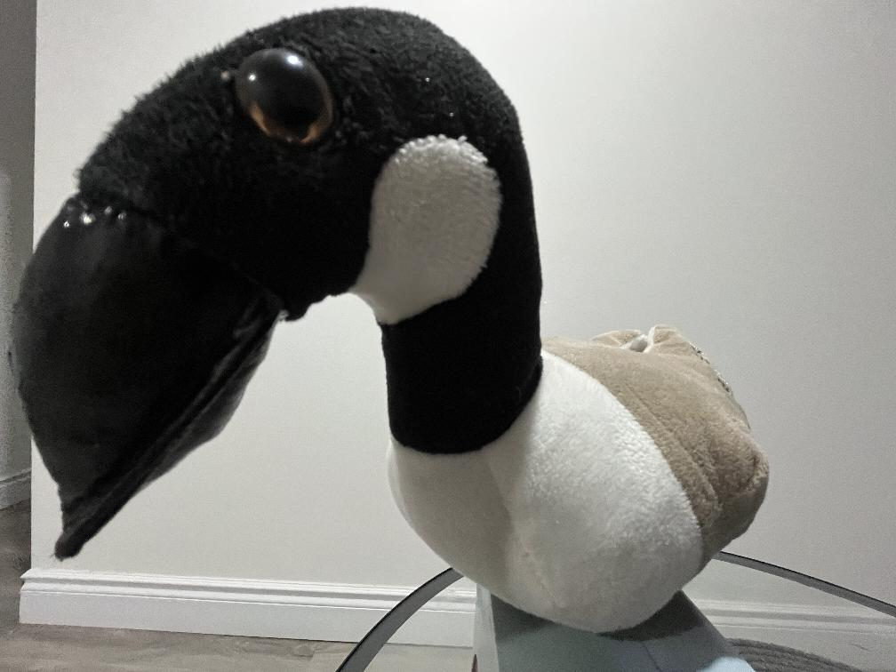
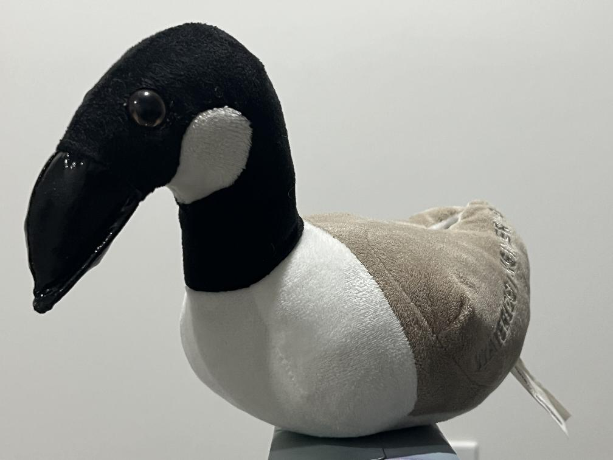
This is my dear friend, the UWaterloo Stuffed Goose that volunteered for this portion of the assignment. The distortion appears to be due to the fact that at very close distances the facial features are a significant ratio of the camera distance. For a point on the facial geometry (X,Y,Z) for a pinhole camera at origin.
When the camera if further away Z >> ΔZ
x = fX/(Z + ΔZ) ≈ fX/Z
Same for y image coordinate. The image appears to be flattened.
But when Z is closer in value to ΔZ, we see significant distortion in the x,y values as the total Z value is closer to the facial geometry depth.
We see the following images of a walkway show the same compression for the same reasons
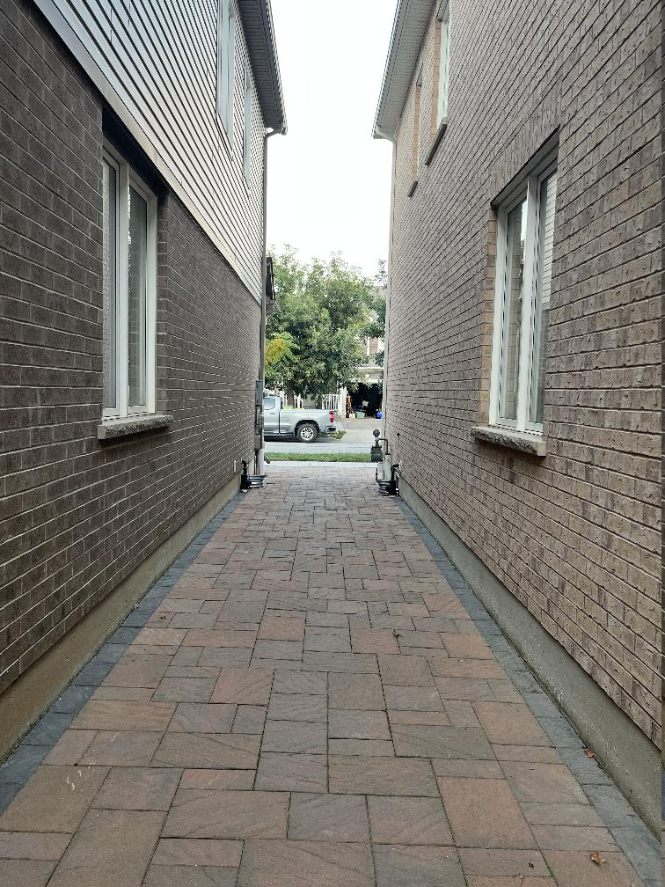
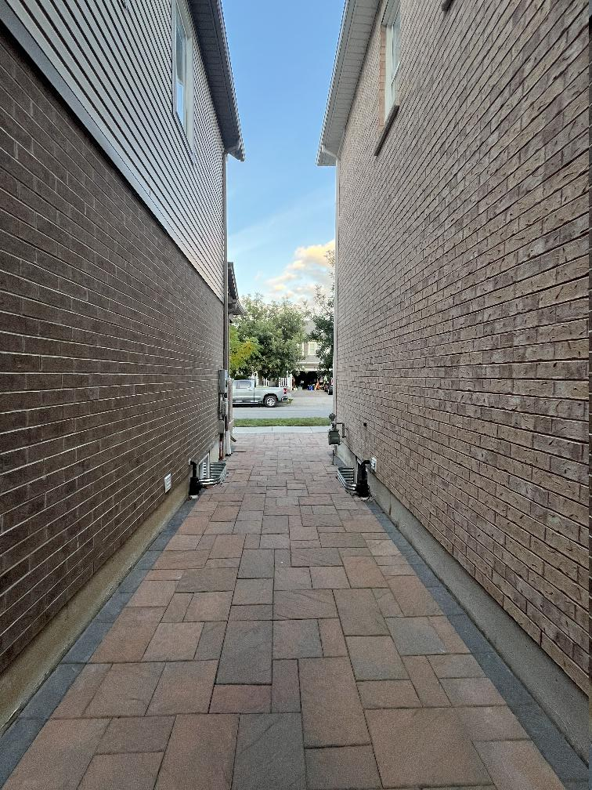
A Dolly Zoom of this scene is in the gif below :
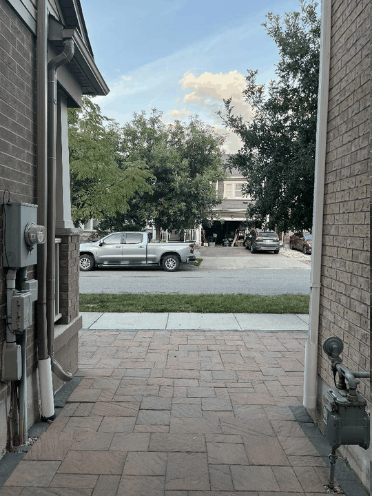
Some of the oldest colored images are the Prokudin-Gorskii glass plate images that were recorded using a collection of three cameras, each taking the photo through a Red, Green and Blue filter.
Our goal in this blog is to explore the process of taking the digitized images and aligning them to visualize the colored scene being captured.
We first look at what the raw images look like in this small collection. We notice that some of the images are small, but some are quite large. So lets start with one of the smaller images and see what the raw digitized form looks like.
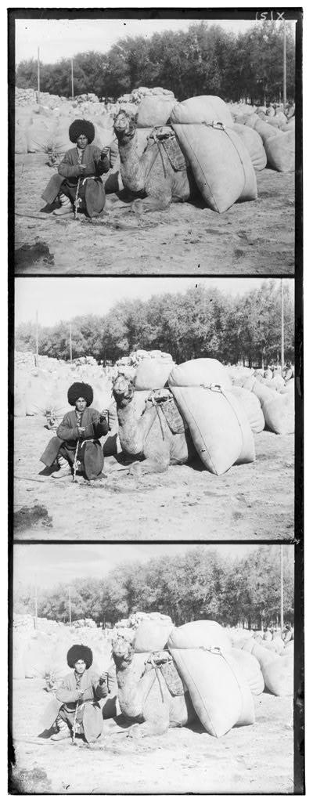
We notice that all the images , despite having different sizes are single channel and structured as this vertical stack of three. From the available information about these images we know that the top image corresponds to the Blue channel, the middle corresponds to Green and the bottom corresponds to Red.
Lets first try a naive approach and just split the image at one third the height to separate the three images. See what that looks like.
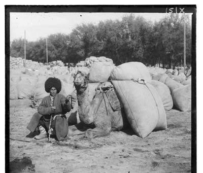
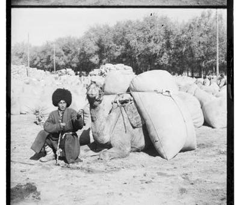
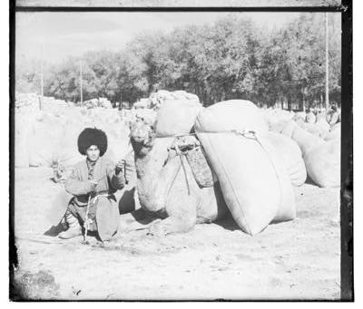
It looks like the white borders are impacting the image and preventing clean split. What if we try to merge these three into an RGB image (using the image_to_RGB method in the notebook). Lets see what it looks like when we don't remove any white borders.
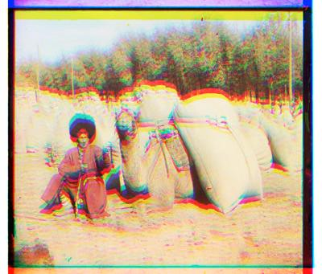
It looks quite distorted where the white border appears to be impacting the relative positioning to a significant degree. So lets try to come up with an algorithm to remove the white borders.
So lets try to take vertical and horizontal slices of the image to make it smaller and easier to work with. We use the following code (the image_border_remove method in the assignment code implements the full approach)
height,width = image_array.shape[0], image_array.shape[1] image_vertical_slices = image_array[:,::width//10] image_horizontal_slices = image_array[::height//10,:]
And these can be seen as follows :
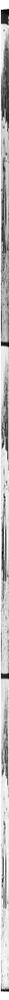
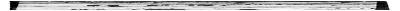
So the image_vertical_slices and image_horizontal_slices images are essentially around 10 vertical or horizontal lines extracted along the width and height. This allows us to visualize what the white borders look like compressed so we can build some logic to remove it.
Lets look at the first row for the image_vertical_slices array.
image_vertical_slices[0,:] > array([255, 255, 255, 255, 255, 255, 255, 255, 255, 255], dtype=uint8)
So we know that the white border at the top of the image corresponds to a continuous array of a 255 value. And this is the same for the bottom border, as well as the left and right borders obtained from the image_horizontal_slices.
We can implement the following pseudocode to then remove these borders.
Lets see what the image looks like now with the white borders removed using this algorithm.
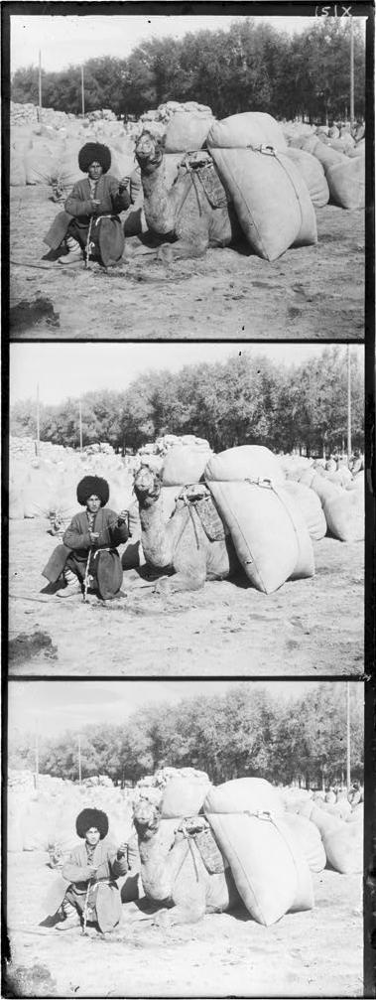
Now recreating the RGB using the same approach as above but now with the borders removed. Lets look at a few images.
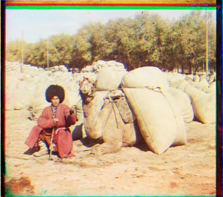
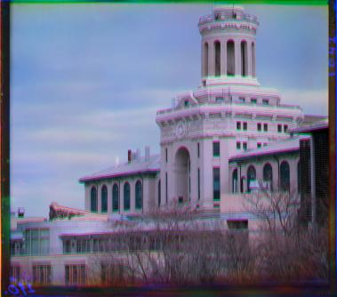
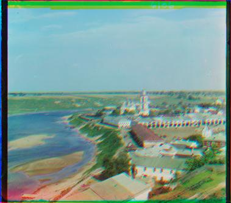
Now this looks much better. We see some distortion due to the misalignment between the RGB channels but now we can start working on the alignment.
We build our single scale alignment method (implemented as image_registration in the assignment code) by taking the following design approach.
The search_range parameter essentially generates a square array of offsets where we shift channel 0 (Red) and channel 1 (Green) relative to channel 2 (Blue) and find their respective offsets by checking the location maximum of the calculated comparison metric in that array. We obtain the offsets by adjusting for the search range parameter in the array offset since indexing in the array starts at [0,0] which corresponds to a channel shift of [-search_range, - search_range].
In each of the previous unaligned images we see that the borders show artifacts due to an imperfect slicing of the images. These artifacts can impact the comparison metric calculation, so we remove 10% of the borders for each of the images to focus our alignment comparison on the central body of the image.
One implementation aspect to note here is that we have two types of comparison metrics, a Normalized Cross Correlation (NCC), and an L2 distance metric. For the former, we need to find the offset with the maximum cross correlation value which would correspond to the best alignment. For the latter we need to find the minimum distance value to find the best alignment.
Our metric agnostic image alignment method however takes the metric function as an input, and finds the maximum value across many comparisons. Since this maximum finding approach is incompatible with a plain L2 distance metric, we create a new L2 distance function that simply multiplies the value by -1 (implemented as image_L2_distance_argmax_adjust). Finding the maximum of the inverted values is then identical to finding the minimum value.
We now run our alignment method on each of the above three images to find the best offset for each of the channels. The function returns a tuple of two offsets, The first corresponds to the offset needed to align the R channel, and second is the offset to align the G channel.
The offsets for the above 3 images are obtained as follows.
((3, 0), (2, 0)) ((0, -1), (0, 1)) ((3, -3), (2, -1))
And after alignment we see the results as follows.
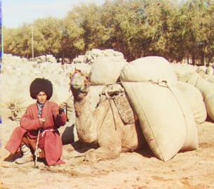
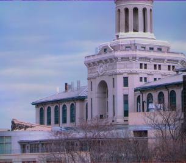
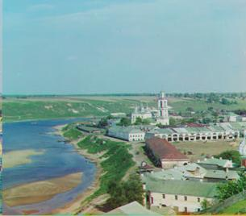
The alignment mismatch artifacts seen previously are now gone and the images appear to be clear.
Now if we want to align larger images, this can become prohibitively compute intensive since we can't do a brute force sweep over large ranges to find the best alignment. In this case we can construct image pyramids. Essentially speeding up the process by finding the best alignment after subsampling the large image. The subsampling method implemented for this project (named image_subsample_x2 in the assignment code) returns an image 1/4th the original size.
We use this subsampling approach to construct an image pyramid by recursively calling the single scale image alignment method developed above. The pseudocode for this recursive approach is as follows.
- define multiscale_offset_estimation -> - Input args : image, comparison_metric_function, search_range, image_width_threshold - if image width > image_width threshold : - downsampled_image = downsample(image) - downsampled_offsets = multiscale_offset_estimation(downsampled_image) - Adjust downsampled offsets for current scale by inverting the downsampling scale (by multiplying x2) - Shift Channels 0 (R) and Channel 1 (G) with the current scale offsets -> partially_aligned_image - delta_offsets = single_scale_offset_estimation(partially_aligned_image) - offsets = current_offsets + delta_offsets - if image width < image_width threshold : - offsets = single_scale_offset_estimation(image) - return offsets
We essentially keep subsampling the image until the width of the image goes below some threshold, at which point we use the single scale alingment to obtain the offsets of that scale. Then the on the upper scale, these offsets are upscaled with the previous image having its channels aligned accordingly.
Then we run the single scale alignment on this partially aligned image, to find the delta offset that was missed due to the subsampling. We continue this recursively up the image pyramid to larger resolutions to obtain the final result.
We sample three of the larger images to demonstrate the output and results. Before alignment the images look as follows. Note that these have been downsampled to show on this webpage.
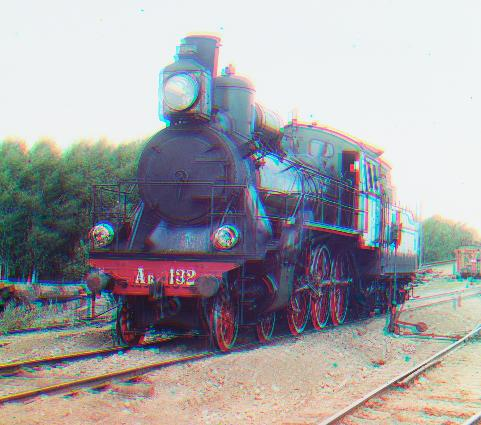
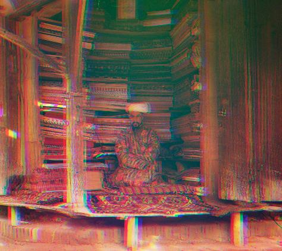
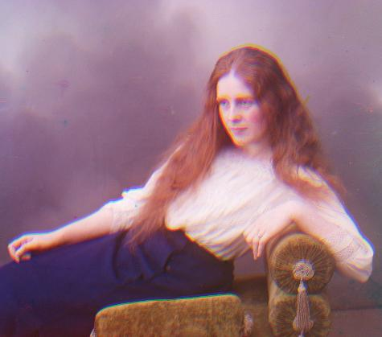
Passing these full scale images into the multi-scale alignment method, we find the following offsets for each respective input.
((32, -27), (5, -14)) ((77, 7), (44, 0)) ((11, -26), (8, -16))
Adjusting for these offsets we get the following aligned images. Note that these are again downsampled for viewing on the webpage. The full sized images are available in the uploaded directory
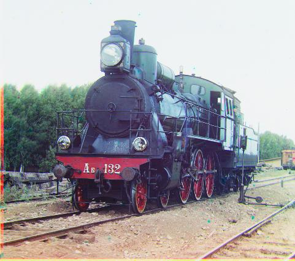
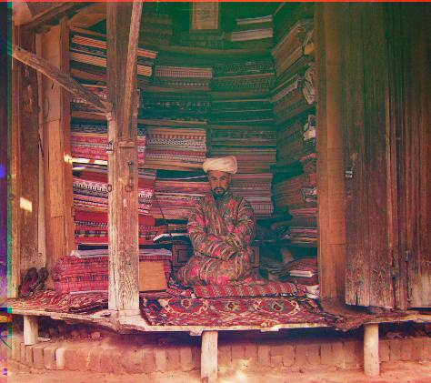
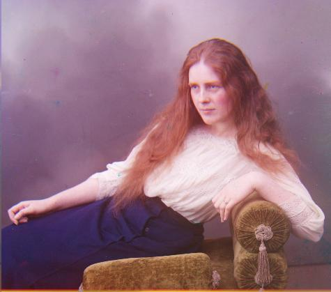
The results look to be very aligned. Note that for all the alignments above we used the NCC metric with a search range of 5 and width threshold of 120. this corresponds to a sweep from [-5,-5] , [5,5] which would correspond to about 8.3% maximum allowable shift between subsequent channels for width. So with these settings there is an upper limit to the maximum misalignment between channels. For larger misalignments, the search range would need to be increased but this comes at a cost of more time needed for alignment checks.
The following table shows the alignment processing times for all the images for different selections of the comparison metric as well as the search range and width threshold values.
| Image | NCC | L2 | ||
|---|---|---|---|---|
| Search Range: 5 Width Threshold: 120 |
Search Range: 10 Width Threshold: 320 |
Search Range: 5 Width Threshold: 120 |
Search Range: 10 Width Threshold: 320 |
|
| 00804v.jpg | ((-4, -1), (-2, -1)) 0.147642 s |
((-4, -1), (-2, -1)) 0.293232 s |
((-4, -1), (-2, -1)) 0.055614 s |
((-4, -1), (-2, -1)) 0.139145 s |
| 10131v.jpg | ((3, 0), (2, 0)) 0.124905 s |
((3, 0), (2, 0)) 0.383188 s |
((3, 0), (2, 0)) 0.088869 s |
((3, 0), (2, 0)) 0.125034 s |
| 01861a.jpg | ((62, -20), (38, -13)) 17.266958 s |
((62, -20), (38, -13)) 64.171956 s |
((62, -20), (38, -13)) 7.762581 s |
((62, -20), (38, -13)) 29.581113 s |
| 00163v.jpg | ((1, -10), (1, -5)) 0.120508 s |
((1, -10), (1, -5)) 0.288177 s |
((1, -10), (1, -5)) 0.055861 s |
((1, -10), (1, -5)) 0.131226 s |
| 01657u.jpg | ((11, -26), (8, -16)) 17.318569 s |
((11, -26), (8, -16)) 62.500015 s |
((11, -26), (8, -16)) 7.504109 s |
((11, -26), (8, -16)) 28.342955 s |
| 01598v.jpg | ((-1, -1), (0, -1)) 0.112574 s |
((-1, -1), (0, -1)) 0.290464 s |
((-1, -1), (0, -1)) 0.056580 s |
((-1, -1), (0, -1)) 0.137602 s |
| 00125v.jpg | ((1, -4), (2, -1)) 0.118348 s |
((1, -4), (2, -1)) 0.287322 s |
((1, -4), (2, -1)) 0.064198 s |
((1, -4), (2, -1)) 0.133413 s |
| 01728v.jpg | ((1, 0), (1, -1)) 0.106971 s |
((1, 0), (1, -1)) 0.275012 s |
((1, 0), (1, -1)) 0.054728 s |
((1, 0), (1, -1)) 0.124908 s |
| 31421v.jpg | ((0, -1), (0, 1)) 0.110355 s |
((0, -1), (0, 1)) 0.315323 s |
((0, -1), (0, 1)) 0.054724 s |
((0, -1), (0, 1)) 0.128292 s |
| 01597v.jpg | ((1, 0), (1, -1)) 0.122138 s |
((1, 0), (1, -1)) 0.282381 s |
((1, 0), (1, -1)) 0.056256 s |
((1, 0), (1, -1)) 0.124784 s |
| 01047u.jpg | ((33, 7), (20, -8)) 17.453284 s |
((33, 7), (20, -8)) 65.984938 s |
((33, 7), (20, -8)) 7.902016 s |
((33, 7), (20, -8)) 28.307939 s |
| 01164v.jpg | ((3, -3), (2, -1)) 0.107454 s |
((3, -3), (2, -1)) 0.272593 s |
((3, -3), (2, -1)) 0.058408 s |
((3, -3), (2, -1)) 0.132896 s |
| 01725u.jpg | ((77, 7), (44, 0)) 17.562686 s |
((77, 7), (44, 0)) 63.535722 s |
((77, 7), (44, 0)) 7.566715 s |
((77, 7), (44, 0)) 27.288889 s |
| 01007a.jpg | ((13, -21), (14, -15)) 17.540303 s |
((13, -21), (14, -15)) 63.744143 s |
((13, -21), (14, -15)) 7.705789 s |
((13, -21), (14, -15)) 28.814119 s |
| 00056v.jpg | ((1, 1), (1, 0)) 0.119656 s |
((1, 1), (1, 0)) 0.295902 s |
((1, 1), (1, 0)) 0.055231 s |
((1, 1), (1, 0)) 0.126691 s |
| 00458u.jpg | ((32, -27), (5, -14)) 17.859119 s |
((32, -27), (5, -14)) 65.576834 s |
((32, -27), (5, -14)) 7.975392 s |
((32, -27), (5, -14)) 28.657936 s |
| 01269v.jpg | ((3, -2), (2, -2)) 0.111132 s |
((3, -2), (2, -2)) 0.287628 s |
((3, -2), (2, -2)) 0.054918 s |
((3, -2), (2, -2)) 0.126872 s |
| 01522v.jpg | ((1, 1), (2, 0)) 0.123074 s |
((1, 1), (2, 0)) 0.275329 s |
((1, 1), (2, 0)) 0.055709 s |
((1, 1), (2, 0)) 0.125086 s |
We also test this algorithm on a Hubble image of the Butterfly Nebula designation NGC 6302. We colorize the combination of the following three recordings.
hst_11504_01_wfc3_uvis_f502n_sci.fits hst_11504_01_wfc3_uvis_f656n_sci.fits hst_11504_01_wfc3_uvis_f658n_sci.fits
These images already appear to be aligned in the data, so we manually add a shift to two of these frames and then check whether out algorithm can find the right alignment. We shift the Red channel by x,y offsets of (30, 40) and the Green channel by offsets (20,10). This unaligned colorization looks as follows
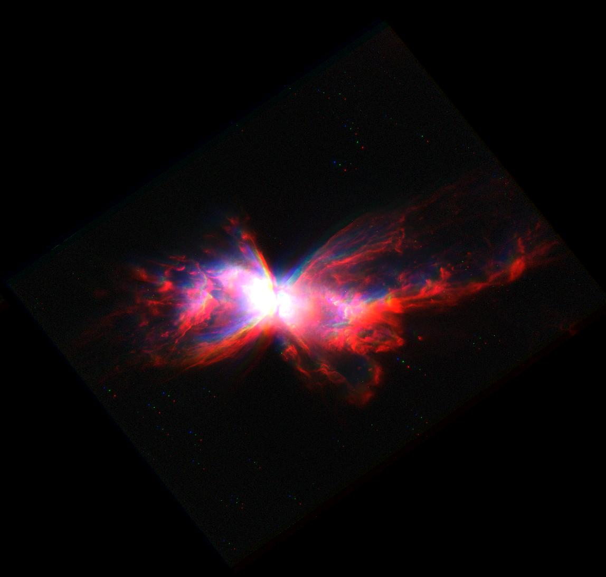
Running this through the multiscale alignment algorithm, we find the following offset.
((-40, -30), (-20, -10))
This is exactly the offset we manually introduced. The final result looks as follows.
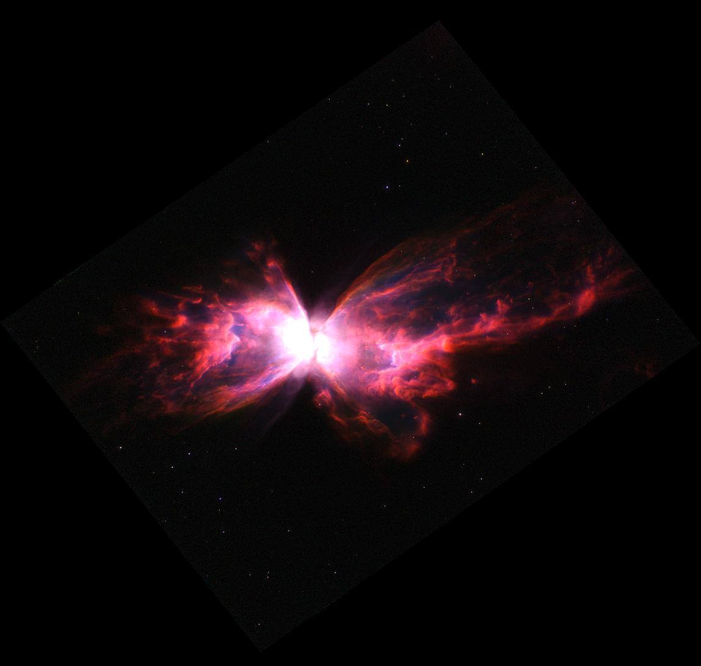
Pretty neat.